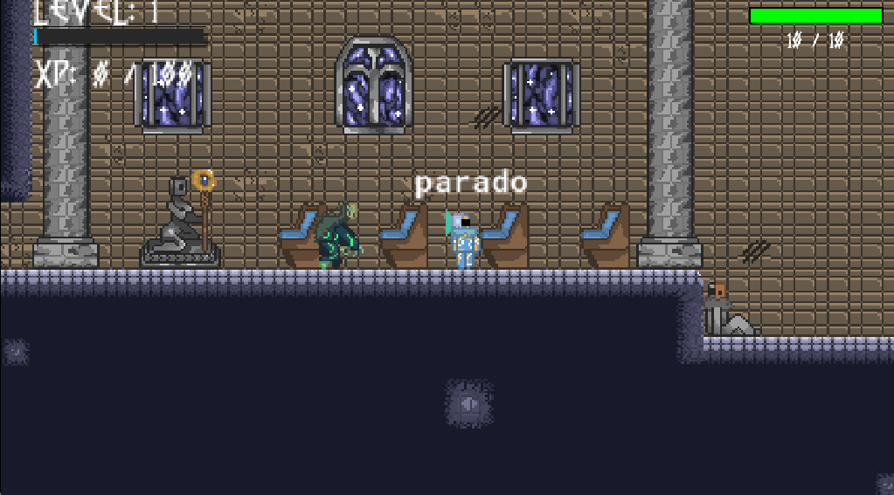

Protótipo Action-Platformer 2D (Metroid)
Mais do que um jogo, este projeto é um laboratório de engenharia de software em tempo real. Desenvolvido para consolidar fundamentos críticos de programação como máquinas de estado finitos, física vetorial quadro a quadro, detecção precisa de colisões e gerenciamento dinâmico de memória e interface.
01 Contexto do Desafio & Engenharia Aplicada
Em sistemas interativos que rodam a 60 quadros por segundo (FPS), qualquer falha na ordem de execução de comandos causa travamentos, estados inconsistentes ou falhas de física. O objetivo deste projeto foi construir uma base modular e previsível do zero, aplicando rigor lógico em cada interação.
- Conflito de Estados: O personagem travava ou executava animações incorretas ao tentar saltar, atacar e interagir simultaneamente.
- Efeito "Tunelamento" (Colisão): Em quedas de alta velocidade, a gravidade fazia o personagem atravessar pisos e paredes sólidas.
- Desincronização de Dados: Atualizações de HP, XP e dicas contextuais na tela causavam queda de performance quando processadas sem controle.
- Máquina de Estados Finitos (FSM): Isolamento estrito de comportamentos via estruturas
switch/case, garantindo transições limpas. - Sub-pixel Collision Checking: Checagem antecipada de coordenadas vetoriais antes do deslocamento efetivo no eixo X e Y.
- HUD Orientada a Eventos: Renderização desacoplada da lógica de física, lendo variáveis de estado de forma síncrona e leve.
02 Arquitetura Interna: Como o Sistema Funciona
Abaixo estão detalhados os cinco módulos lógicos projetados para dar sustentação, responsividade e escalabilidade ao protótipo:
Máquina de Estados (FSM)
Toda a lógica do jogador é governada por estados mutuamente exclusivos (Idle, Run, Jump, Fall, Dash, Interact). Cada estado possui suas próprias regras de entrada e saída, eliminando bugs de comandos sobrepostos.
Física Vetorial & Colisões
Implementação de aceleração gravitacional progressiva e atrito horizontal. Antes de mover o objeto na tela, um loop de verificação testa pixel a pixel a proximidade com colisores sólidos, encostando o personagem perfeitamente na superfície.
Responsividade de Salto
Refinamento da experiência do usuário (Game Feel) com controle de altura variável do salto conforme o tempo de pressão da tecla e janelas de tolerância para resposta imediata ao tocar o solo.
Sensores & Interação Contextual
Uso de zonas de detecção (bounding boxes dinâmicas) que identificam objetos interativos no cenário e disparam alertas visuais na interface ("Pressione [I] para interagir") apenas quando o jogador está no raio de ação.
Transição de Salas & Persistência
Arquitetura modular de salas (Rooms) inspirada no gênero Metroidvania, com portas de transição que preservam os atributos atuais do jogador (HP, XP, nível e inventário) ao navegar entre diferentes áreas do mapa.
03 Execução em Tempo Real: Física & Feedback Visual
A demonstração abaixo ilustra o motor de física e os sensores de proximidade operando em conjunto. Observe a resposta imediata da movimentação, o alinhamento preciso nas plataformas e o gatilho dinâmico de interface ao se aproximar de pontos de interesse.

[ Ciclo de execução a 60 FPS: leitura de inputs, cálculo vetorial de movimento e disparo de gatilhos contextuais ]
04 Interface de Status (HUD) & Construção Modular
O painel superior (HUD) exibe em tempo real o nível atual, a barra de pontos de vida (HP) e o progresso de experiência (XP). Os cenários foram construídos com blocos modulares (tilesets) otimizados para manter baixo consumo de memória e estética atmosférica.

[ Renderização de camadas (Layers), tilesets estruturados e HUD sincronizada com o estado global ]